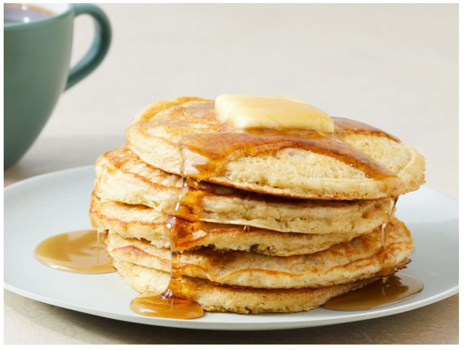

Oatmeal Pancakes

I make these oatmeal pancakes for my kids. The recipe is so simple — the batter with oats and buttermilk is prepared in a food processor or blender, so it's ready to cook in minutes. Serve with syrup and butter or a dollop of applesauce.
- Prep Time: 5 mins
- Cook Time: 10 mins
- Total Time: 15 mins
- Servings: 4
- Yield: 4 pancakes
why you'll love this recipe
- The pancake batter in this recipe combines oats and buttermilk for an extra soft texture.
- Home cooks love customizing these pancakes with fruits, alternative flours, or milk swaps.
- All recipes member metmomma shares, "Good without even adding syrup topping!"
ingredients
- 3/4 cup buttermilk
- 1/2 cup all-purpose flour
- 1/2 cup quick cooking oats
- 1 large egg
- 2 tablespoons vegetable oil
- 1 tablespoon white sugar
- 1 teaspoon vanilla extract
- 1 teaspoon baking powder
- 1/2 teaspoon baking soda
- 1/2 teaspoon salt
Directions
- Step 1: Gather all ingredients.
- Step 2: Combine buttermilk, flour, oats, egg, oil, sugar, vanilla, baking powder, baking soda, and salt in a blender; purée until smooth.
- Step 3: Heat a lightly oiled griddle or large skillet over medium-high heat. Pour 1/4 cupfuls batter onto the hot griddle. Cook until bubbles form on the surface, 1 to 2 minutes. Flip and cook until browned on the other side, 1 to 2 minutes more.
- Step 4: Serve immediately.
Home